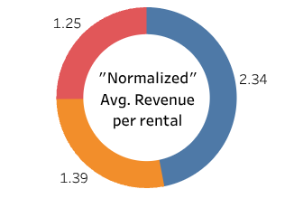

Customers Distribution Map
Instacart Grocery Basket Analysis
1. Project Goals
Motivation
Instacart, an online grocery store that operates through an app, wants to uncover more information about their sales patterns,
with the goal of enhancing them.
Objective
Perform an Exploratory Data Analysis of some of their data (2017 sales) to derive insights on customers purchasing habits and
suggest strategies for better segmentation and targeted marketing.
2. Key Questions
Many business questions were raised in the beginning of the project, and several others were added during the analysis. The following deserve a highlight:
- What are the busiest days of the week and busiest hours of the day?
- Are our customers spending more at certain times of the day/week?
- Are certain types of products more popular than others, both in sales volume and revenue?
- How are our customers segmented in:
- Loyalty? (how often do they return to Instacart)
- Based on loyalty, are there differences in ordering habits (frequency and volume)?
- Same as above, but based on demographics like age, family status, income, etc.?
- Do different segments show different patterns in the types of products purchased?
3. Process
The data for this project has two sources:
- “The Instacart Online Grocery Shopping Dataset 2017”, Accessed via Kaggle on 30/06/2025
- A fictional customers dataset created in the scope of Career Foundry's Data Analytics course.
Due to the nature and size of data, where the largest dataset had over 32M records,
Python was selected as the main tool for the project.
Libraries like Pandas for all dataset handling, NumPy supporting some specific computational needs,
and MatPlotlib together with Seaborn to develop the visualizations during Exploratory Data Analysis
and later for final reporting, add to the technology package used.
All of this being managed behind by Anaconda, as library manager for Python, and using Jupyter Notebook for script development.
By specific request of the client, a final report was prepared in Excel, based on its own template.

All the scripts developed during the project are available in the Project's Github repository
Before the analysis, a careful preparation of the datasets was done taking care of all aspects of data cleaning, wrangling. TO BE CONTINUED! Below there is an overview of the population flow and the merging process between the datasets. In the final stages, some slicing was needed due to memory restrictions

4. Key Insights from Data
Distribution of revenue across the film catalog

Rental rates performance
.

 On the left it's shown the revenue distribution for each of the rental rates defined in the catalog.
On the left it's shown the revenue distribution for each of the rental rates defined in the catalog.
Rate in this context is simply the price at which the films are rented for the agreed rental duration.
Since the number of rentals on each rate are well balanced, the average revenue per rental follows a very similar distribution.
But the immediate question was:
With a similar number of rentals, shouldn’t a rate of $4.99 produce a revenue approximately 5 times higher than $0.99?
 In fact, if we normalize the average revenue per rental, i.e., if we divide the average revenue per rental by the value of the rental rate itself, we can quickly see that 0.99$ is the one that performs better.
But why does this happen?
The secret lies in the penalty policy. The customers keep their films in completely different patterns from what would be expectable just by looking at what is defined in the catalog, and they incur in penalties in case of delays. Looking deeper into the data, I’ve discovered that the penalties are a fixed amount (1$) per day of delay, which in turn influences more the lowest rental rate.
Ocupancy Ratio
Another metric developed was the Occupancy Ratio. It was measured the timespan between the first rental date and the last return date on the database, serving as the denominator for the ratio (100% of time). Then, I measured for each existing copy of the films, how much time they were effectively on rental (or on the other hand they were catching dust in our stores shelves). Finally, I've computed an average time of the several copies of each film. The division of the latter by the denominator gave us the film's Occupancy Ratio.
Geographical Distributions
Several distribution maps were created to show:- Customers Distribution
- Revenue Distribution
- Revenue per customer Distribution
- Top 5% spender customers Locations

{kind=link}
{kind=link}
{kind=link}
5. Results
Recommendations to the online video service launch strategy
- Remove variable rental duration concept and apply one single duration for all rentals. Recommended 48H.
- Eliminate or review entirely the penalty policy:
- On online service, physical return don't exist. At best, an extension of digital rental could be in place
- As demonstrated, it makes us lose money in higher rental rate films
- Focus promotional efforts on the top 30% of films. They represent more than half of the revenue.
- Expand the film catalog with films based in our top countries (e.g. Bollywood films, as India is the top country in customers and revenue)
- Monitor dynamically occupancy ratio to:
- decide when to purchase additional licenses for top requested films
- propose discounted rentals on films with lower occupancy ratio
- Focus geographical marketing efforts in the top revenue countries as well as in the top revenue per customer
Project Final Presentation (web view)
The full project documentation can be found on Github Repository, including both pdf and ppt versions of the presentation.